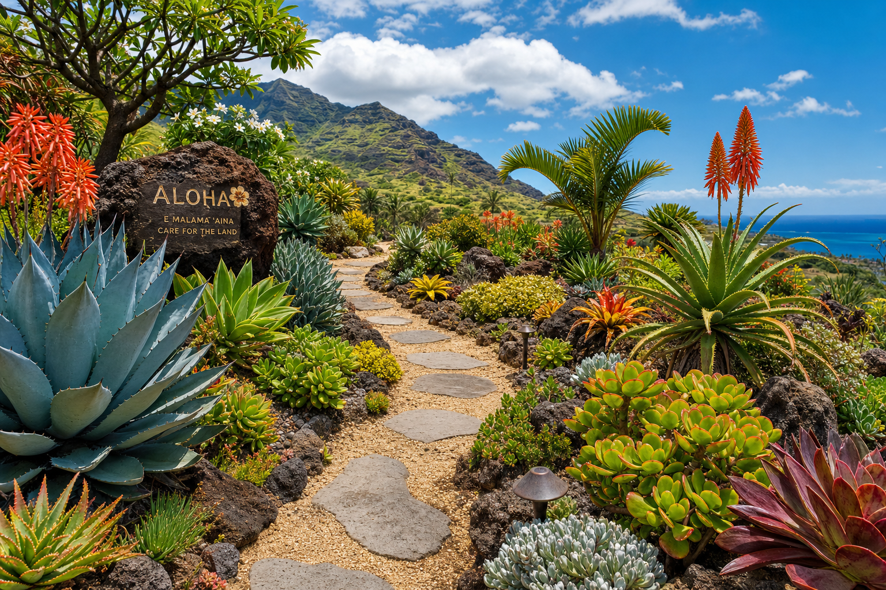

Even Kauai Has Dry Spells
Kauai's reputation as the "Garden Isle" is well-earned — parts of Waialeale receive 450 inches of rain per year, making it one of the wettest spots on Earth. But Kauai also has significant microclimatic variation. The South Shore and parts of the West Side receive only 20–25 inches annually, comparable to semi-arid regions. And even wetter areas experience dry spells during summer months that stress water-dependent plants.
Designing for drought resilience makes sense everywhere on Kauai — it reduces water bills, ensures your garden survives dry spells, and increasingly protects you from rising water costs.
Drought-Tolerant Plants That Still Look Beautiful
Plumeria (Frangipani)
Plumeria is extraordinarily drought-tolerant once established — they actually prefer to dry out between waterings. Few plants provide more visual impact for less water. Once you have one established tree, you'll never need to irrigate it outside of extended dry periods.
Bougainvillea
One of Hawaii's most spectacular plants in bloom, bougainvillea thrives on neglect and blooms most prolifically when slightly stressed for water. Perfect for trellises, walls, and property boundaries in drier microclimates.
Agave and Succulents
Several agave species grow beautifully in Hawaii's drier areas and require almost no supplemental irrigation. They make dramatic landscape focal points with their architectural form.
Native Dry-Land Plants
ʻIlima (Sida fallax), pua kala (Hawaiian prickly poppy), and various native grasses are adapted to Hawaii's drier conditions and can go extended periods without irrigation once established.
Design Principles for Drought Resilience
- Deep irrigation: Infrequent deep watering encourages deep root development that makes plants naturally more drought-resistant.
- Mulching: A 2–3 inch layer of organic mulch retains soil moisture and dramatically reduces irrigation needs.
- Drip irrigation: Delivers water directly to root zones with minimal evaporation.
- Soil amendment: Adding compost to sandy soils dramatically improves water retention.